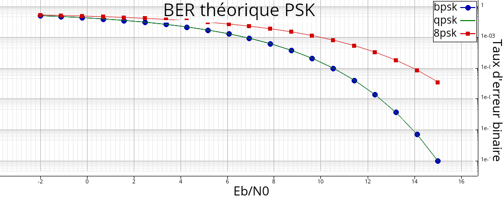

libtsd
0.1
C++ signal processing library
Main Page
Modules
Installation
Licence
◆
waveform_psk()
sptr<
WaveForm
> dsp::telecom::waveform_psk
(
unsigned int
M
,
const
ShapingFilterSpec
&
filtre
=
ShapingFilterSpec::nrz
()
)
inline
Phase modulation
Creation of M-PSK waveform.
Parameters
M
Number of bits / symbol.
filtre
Shaping filter (default: NRZ)
Returns
Abstract waveform pointer (
WaveForm
).
Warning
\(M\) must be a power of 2.
Example 1: Some PSK modulations
Figures f;
pour(
auto
M: {2, 4, 8, 16})
{
soit w = forme_onde_psk(M);
soit constel = w->constellation();
f.subplot().plot_iq(constel,
"o"
, w->desc());
}
Waveforms examples: BPSK, QPSK, 8PSK, 16PSK
Example 2: Theoretical bit error rates
soit w2 = forme_onde_psk(2),
w4 = forme_onde_psk(4),
w8 = forme_onde_psk(8);
soit EbN0 =
linspace
(-2, 15, 20);
soit ber2 = w2->ber(EbN0),
ber4 = w4->ber(EbN0),
ber8 = w8->ber(EbN0);
Figure f;
f.plot(EbN0, ber2,
"-ob"
,
"bpsk"
);
f.plot(EbN0, ber4,
"-g"
,
"qpsk"
);
f.plot(EbN0, ber8,
"-rs"
,
"8psk"
);
f.titres(
"BER théorique PSK"
,
"Eb/N0"
,
"Taux d'erreur binaire"
);
f.axes().def_echelle(
"lin"
,
"log"
);
dsp::linspace
static Vecf linspace(float a, float b, unsigned int n)
Equidistant point interval.
Definition:
dsp.hpp:685

BER
See also
waveform_qam()
,
waveform_qpsk()
dsp
telecom
Generated on Tue May 2 2023 10:30:19 for libtsd by
1.9.1